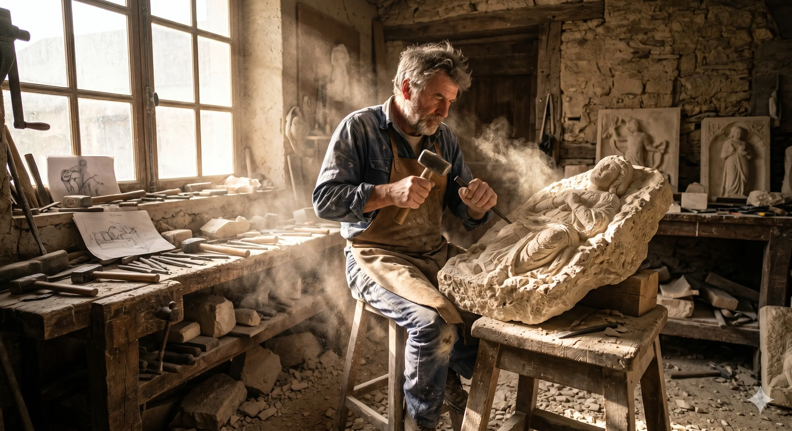

Techniques & Gestes
Le savoir-
faire
De l'ébauchage à la sculpture fine, chaque geste est le fruit d'années de pratique. Les outils — ciseaux, gradines, bouchardes — deviennent des extensions naturelles de la main.



Façonner la matière, révéler l'âme de la pierre. Un savoir-faire transmis depuis trois générations, au service de vos projets d'architecture et de décoration.
Découvrir les réalisationsChaque bloc de pierre porte en lui une histoire géologique de millions d'années. Mon travail consiste à dialoguer avec cette matière unique — en lire les veines, en respecter la structure — pour en extraire des formes qui traverseront le temps.
De la restauration d'un chapiteau médiéval à la conception d'une cheminée contemporaine, chaque projet est traité avec la même exigence : celle de l'artisan qui sait que son travail durera des siècles.
De l'ébauchage à la sculpture fine, chaque geste est le fruit d'années de pratique. Les outils — ciseaux, gradines, bouchardes — deviennent des extensions naturelles de la main.
De la restauration patrimoniale à la sculpture contemporaine


Formé dès l'âge de 16 ans dans un compagnonnage du Tour de France, j'ai appris à lire la pierre avant de l'écrire. Vingt-cinq années sur les chantiers — cathédrales, demeures bourgeoises, jardins contemporains — ont aiguisé mon regard et ma main.
Chaque projet commence en carrière, où je sélectionne personnellement les blocs selon leur grain, leur couleur, leurs veines. Cette connaissance intime de la matière est ce qui distingue un artisan d'un exécutant.
Chaque projet est précédé d'un échange en profondeur, d'un relevé de cotes et d'une étude de faisabilité. Des croquis et des épures sur papier viennent poser les bases avant que le premier outil ne touche la pierre.
Remise en état de façades, de colonnes, d'encadrements, de corniches et d'éléments sculptés anciens, dans le respect des techniques d'origine.
Habillages de façade, escaliers, encadrements de baies, cheminées et dalles. Du projet sur mesure à la pose clé en main.
Sculptures ornementales, fontaines, puits, stèles, dalles funéraires et aménagements de jardins. La pierre au service de votre univers.
Qu'il s'agisse d'une restauration urgente, d'un chantier neuf ou d'une simple question sur la pierre, je réponds personnellement à chaque demande dans les 48 heures.